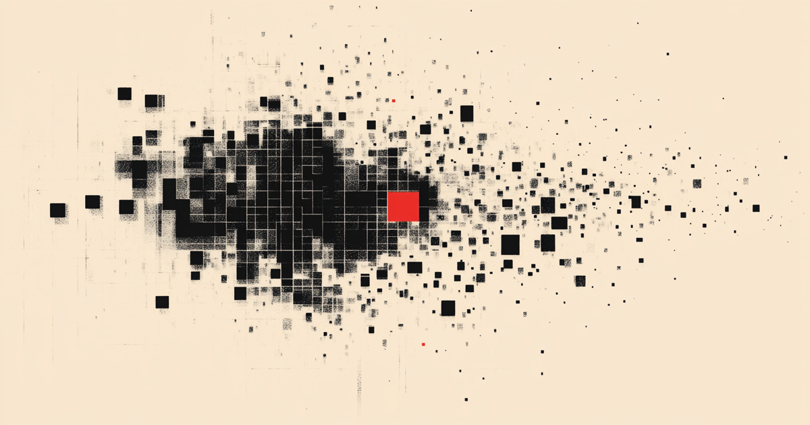

TARES · douanes
Convergence
Pixels noirs qui s'agrègent vers un carré rouge à droite. Métaphore des données qui convergent vers la livraison.
Le 6 mai 2026, la FINMA a accordé l'autorisation écrite. Dans la foulée, on a rebrandé tout le site avec un nouveau logo, des bannières propres pour chaque dataset, un footer redesigné, une refonte du blog, et un carrousel de citations sur la home. Snapshot du chantier ci-dessous.
Le résultat du chantier en une grille.
Communication FINMA, signée Nadine Bucher, en réponse au courriel envoyé le 17 avril 2026.
D'un point de vue juridique, nous n'avons aucune objection à ce que vous utilisiez des données de la FINMA accessibles au public comme source de données pour votre produit, sous réserve du respect des droits d'auteur de la FINMA et de l'intégrité des documents sources.
| Source | Dataset | Statut | Date |
|---|---|---|---|
| BAZG | TARES | Permission écrite | 2026-04-21 |
| FINMA | FINMA Registry | Permission écrite | 2026-05-06 |
| OFS / BFS | NOGA / Classifications | En attente | — |
Généré sur Midjourney, choisi le 6 mai parmi 4 candidats. Croppé à 640×640 pour faire ressortir la croix. Carré rouge accent au centre.
Trois compositions Midjourney distinctes, mêmes contraintes (pixels noirs sur cream, un carré rouge accent, swiss design, ratio 191:100). Chaque dataset a sa polarité visuelle.
Pixels noirs qui s'agrègent vers un carré rouge à droite. Métaphore des données qui convergent vers la livraison.

Subdivision récursive avec lignes verticales — évoque la hiérarchie taxonomique. Flippée H pour pattern V2.

Nuage dense de pixels en zone centrale, carré rouge en cœur. Évoque le registre des entités sous surveillance.
Sur les 3 pages dataset, la bannière apparaît en background du hero (right -2%, bottom -4%, 72% × 85%, opacity 0.45, mask diagonal 135°). Mêmes paramètres CSS partout — seule l'URL du background-image change.
La section qui affichait juste BAZG est passée en composant QuoteCarousel.astro avec navigation prev/next + dots indicateurs. Les 2 slides BAZG + FINMA partagent le même fond noir. Animation fade 450ms, accessible clavier (← →) + ARIA roles.
Permission accordée pour la diffusion commerciale des données TARES sous votre offre, sous réserve des conditions usuelles d'attribution et d'exclusion.
Nous n'avons aucune objection à ce que vous utilisiez des données de la FINMA accessibles au public comme source de données pour votre produit, sous réserve du respect des droits d'auteur de la FINMA et de l'intégrité des documents sources.
Le footer passe en grid 1.5fr / 1fr. À gauche : la marque + 3 colonnes de liens + status. À droite : la bannière TARES inversée horizontalement, animation pan lent 18s. Les sections légales (disclaimer, copyright, lang switcher) restent full-width sous le split, alignées au padding 56px.
Page index : cards en grid 1fr / 280px avec mini-bannière thumbnail à droite (couverture du dataset associé). Template article : OG image dynamique + bannière en fond du hero (pattern V2). Nouvel article publié le 6 mai pour annoncer la permission FINMA.
Annonce news — texte intégral du mail Nadine Bucher, conditions implicites, état des permissions.
Mis à jour avec encadré renvoyant vers la news + correction "10 separate lists" pour cohérence.
Pas de mise à jour de contenu — bénéficie du nouveau template (OG dédiée + bannière en fond).
Tous poussés en live sur Vercel, sans aucun rollback.